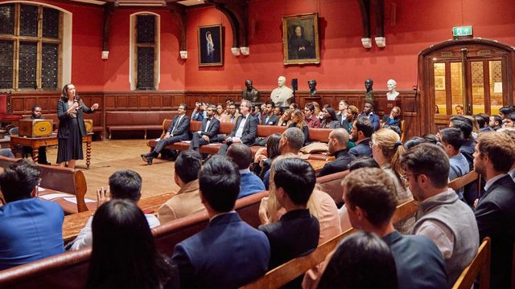
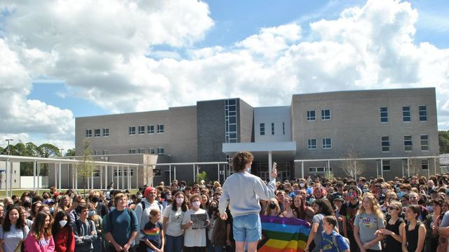
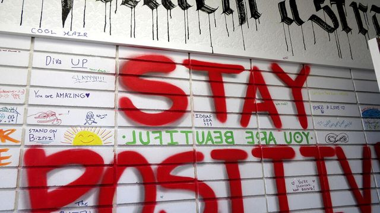
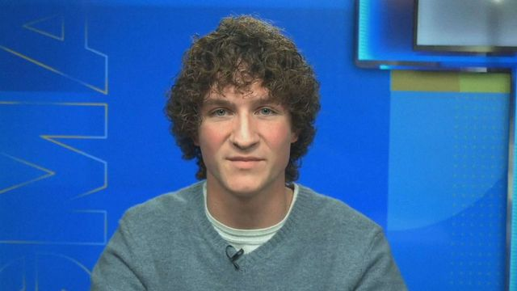
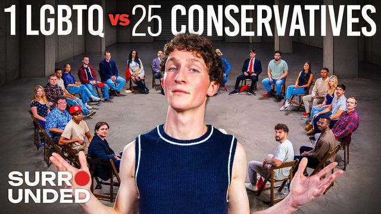

MOD 01
Circuit Lab
Science Olympiad · 2021
DC and RC circuit analysis under competition time limits.
DC circuit analysis, measurement, Ohm’s and Kirchhoff’s laws, resistor networks, RC circuits. Placed 4th statewide and 3rd regionally.
Electrical & Computer Engineering · Cornell ’29
Engineering student at Cornell. Previously co-founded and scaled a $1M+ national nonprofit.
As Chief of Staff I ran its operations, press and appearances, from the White House to Jubilee’s Surrounded. Now I’m studying Electrical & Computer Engineering to build the technical side myself.
Note
ON AIR · Press
I ran press and the Executive Director’s appearances for SEE Alliance: the White House, the JFK Library, the Oxford Union, Harvard Radcliffe Institute, UC Berkeley, Jubilee’s Surrounded, and galas like Family Equality’s and Equality Florida’s. Coverage passed 1 billion impressions, including MSNBC, AP, France Télévisions and four documentaries.

Oxford UnionYouth activism debate ↗
Teen VogueFlorida students take their education into their own hands ↗
WUSF · NPRSEE Alliance puts youth issues front and center ↗
Good Morning AmericaCensored graduation speech, live interview ↗
Jubilee · Surrounded1 LGBTQ+ Activist vs 25 Conservatives ↗I started at Cornell in 2022, then left to work full time on SEE Alliance as it grew. I was good at the people side of running an organization, but the work I kept wanting more of was the systems: the data, the processes, figuring out why something broke and fixing it so it stayed fixed.
I came back in Fall 2026 to do that work at a deeper level. I’ve liked circuits since high school Science Olympiad, and I’m most interested in the layer everything else runs on: computer architecture, networks, and distributed systems.
IN 02 · Education
Course cardB.S. ECE
| Code | Course | Subject |
|---|---|---|
| CS 1110 | Intro to Computing (Python) | Computing |
| MATH 1910 | Calculus for Engineers | Mathematics |
| PHYS 1112 | Physics I: Mechanics & Heat | Physics |
| ENGRI 1101 | Engineering Operations: Data Science & Decision Making | Engineering |
| CHEM 2070 | General Chemistry I | Chemistry |
| Next | Digital Logic | Spring 2027 |
| Next | C++ Programming | Spring 2027 |
3.6 GPADean’s ListCornell Tradition Fellow
U.S. News’ No. 1 public high school in Florida, top 20 in the nation.
4.0 unweighted · 5.05 weighted · 1510 SAT · AP Scholar with Distinction · National Merit Commended
MOD · Projects
Patch a module to send its signal down the trace.
Now building
Freedge, a live inventory app for Cornell’s community free fridge
Kappa Theta Pi × Food Recovery Network. I lead user research and product requirements on a team of three.
MOD 01
Science Olympiad · 2021
DC and RC circuit analysis under competition time limits.
DC circuit analysis, measurement, Ohm’s and Kirchhoff’s laws, resistor networks, RC circuits. Placed 4th statewide and 3rd regionally.
MOD 02
KTP × FRN · 2026
Live fridge inventory. JavaScript, Supabase. Launched.
A mobile-first app showing what’s in the community free fridge, replacing a group chat. Plain HTML/CSS/JS on a Supabase database that updates every phone live. I run user interviews and stakeholder meetings, turn them into a prioritized roadmap, and prototype features like food stacking, location and hours, and usage analytics.
MOD 03
1972 fire truck · 2026
Brought a dead roof light bar back on a 1972 rescue truck.
Traced power from the battery through the cab switch to the roof, found a corroded frame ground, and rebuilt it. Also pulled the engine and did welding and soldering at home.
CH · Experience
CH 12022–2026
Coverage: ABC News ↗Teen Vogue ↗
CH 22022–2023
Coverage: The Washington Post ↗NPR ↗
Earlier wins
OUT · Contact
Looking for Summer 2027 internships in engineering and technology.